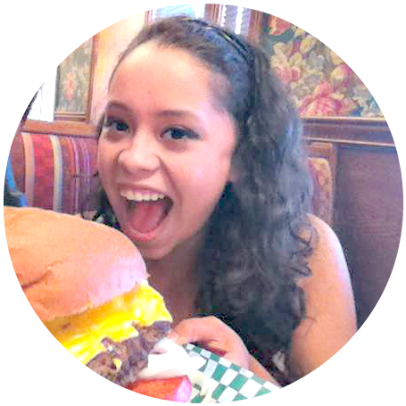
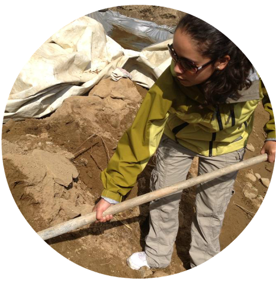
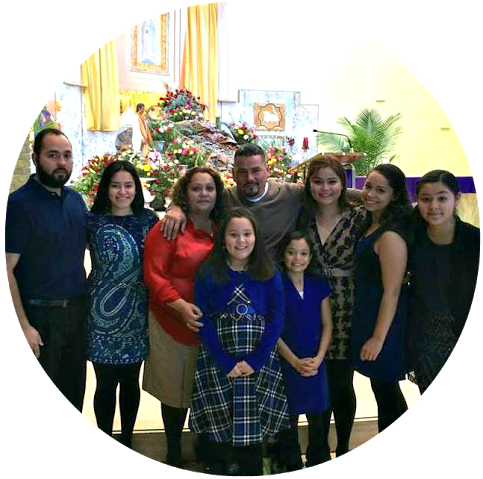

About Me
I Am A Web Developer, Passionate Programmer, And More!
  
I enjoy turning complex problems into simple, beautiful and
intuitive programs, as well as interface designs. When I'm not coding or
pushing pixels, you'll find me doing some of the following things:
Taking on a Food Challenge!
I love to eat and experience flavors. I am not a chef, just a girl who really
loves to eat, and cook. I enjoy trying new foods, cooking new recipes and trying new
spins on classic meals. I don't love everything, but I love trying everything!
Helping Others
I am passionate about helping people accomplish far more than they ever thought was
possible. One way I accomplish this is by teaching people how
to code. I currently teach basic HTML to local middle school students and
basic Python to college students. Another way I strive to help others is through
mentoring. This year I have the privilege to serve as a mentor for two freshmen in the Georgetown
Scholarship Program.
Spending Time With My Family
I enjoy many things in life, but what I really enjoy the most is spending time with my
family. I have five fabulous sisters, two thoughtful brothers, precious parents, and a
awesome little dog. When I am home, we enjoy volunteering, going on outdoor adventures,
cooking together.